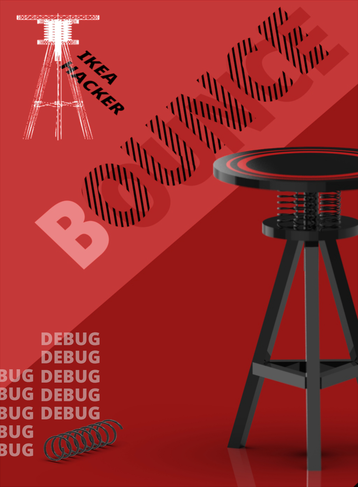
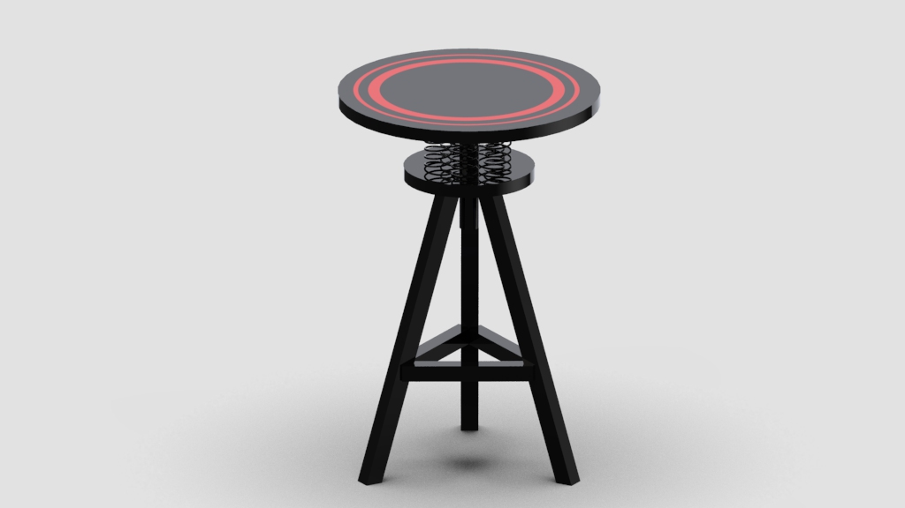
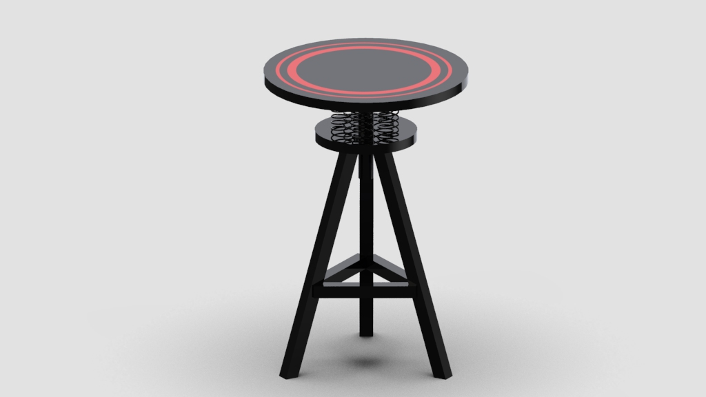
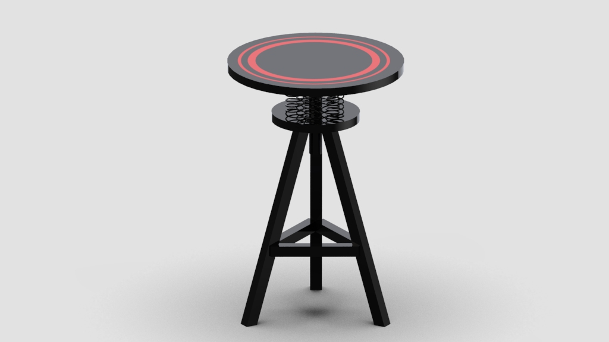
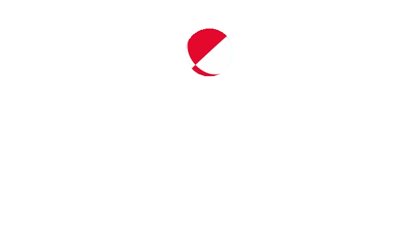

BOUNCE STOOL

 


弹弹凳以宜家的立式台灯与桌面转盘为媒介，利用宜家产品自身结构特性完成了弹和转的功能实现。在坐上去的一刹那，弹簧猛然压缩，给人以措手不及的惊诧感。可转可弹的双重不确定性另使用者感到刺激，与凳子自身的沉稳的外表形成反差。
Using IKEA vertical lamp and turntable as the media, I created a stool that can bounce as well as rotate at the same time. At the moment of sitting on it, the stool suddenly goes down, giving people a sense of surprise. The double uncertainty of the swivel and bounce is stimulating to the user.
